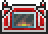

Adamantite Ore
| Adamantite Ore | |
|---|---|
| | |
| Statistics | |
| Type | Ore Crafting material |
| Max stack | 99 |
| Rarity | Orange |
| Use time | 14 |
| Sell | 15 |
Adamantite Ore is an ore that is added to a world as a reward for "purifying" it. It is used to craft the Adamantite Forge and Adamantite Bars, therefore, it is the basic ingredient for all Adamantite items. The ore will not appear in the world until the player destroys a Demon Altar with a Pwnhammer. This will "bless" the world with deposits of either Adamantite Ore, Cobalt Ore, or Mythril Ore. These ores will then be found randomly like any other.
It is colored red and can be found near the bottom of the Cavern layer where the lava begins. You need to have at least a Mythril Drill to be able to mine it. To craft all Adamantite equipment, the player needs to gather 144 Adamantite bars, plus thirty ore for an Adamantite Forge, for a total of 750 Adamantite Ore.
Crafting
Used in
| Result | Ingredients | Crafting Station | |
|---|---|---|---|
|  | Adamantite Forge | Adamantite Ore(30) | |
| Hellforge(1) | |||
| | Adamantite Bar | Adamantite Ore(5) | Adamantite Forge |
History
- 1.1: Introduced.
| Ores |
|---|
| Copper Ore Iron Ore Silver Ore Gold Ore Demonite Ore Meteorite Hellstone Cobalt Ore Mythril Ore Adamantite Ore |
| Adamantite |
|---|
| Adamantite Ore Adamantite Bar Adamantite Chainsaw Adamantite Drill Adamantite Forge Adamantite Sword Adamantite Glaive Adamantite Repeater Adamantite armor |